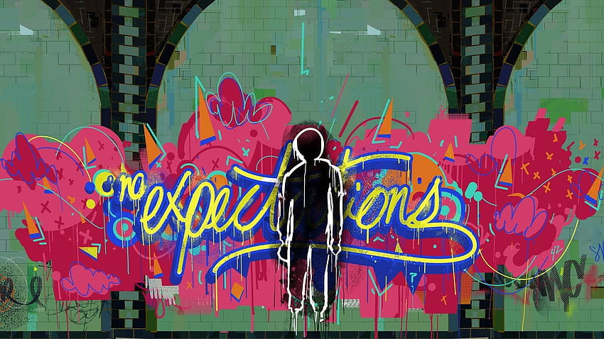

Incorrecto ¡Qué Mal!, La Inteligencia Artificial se llamaba Jarvis Gracias a que respondiste erróneamente, Pere rechazará la oferta y seguirá las expectativas de su padre.  Imagen: Figura de un grafiti de "Expectativas" ㅤㅤㅤㅤContinuarㅤㅤㅤㅤ